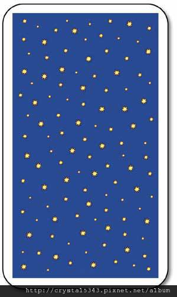

<!DOCTYPE html>
<html lang="en">
  <head>
    <meta charset="UTF-8" />
    <meta name="viewport" content="width=device-width, initial-scale=1.0" />
    <title>Document</title>
    <style>
      /* 4. aside-right-container*/
      .aside-right-container {
        width: 400px;
        height: 614.22px;
        /* background-color: palevioletred; */
      }

      .aside-right-content-container {
        width: 90%;
        height: 100%;
        /* border: 2px double khaki; */
        margin: auto;
      }
      .display-card {
        /* border: 2px double lawngreen; */
        width: 100%;
        height: 46%;
        margin-top: 20px;

        display: flex;
        flex-direction: column;
        justify-content: center;
        align-items: center;
      }

      .display-card > .target {
        width: 102px;
        height: 160px;
        display: flex;
        border: 2px solid black;
        margin-top: 10px;
      }

      .tarots {
        /* border: 2px double lawngreen; */
        width: 100%;
        height: 28%;
        margin-top: 20px;

        position: relative;

        /* display: flex;
        justify-content: space-around;
        flex-wrap: wrap; */
      }

      .tarot-image {
        width: 51px;
        height: 80px;

        position: absolute;

        /* 設定子元素在 3D 空間內 */
        transform-style: preserve-3d;
        /* display: flex;
        align-items: center;
        justify-content: space-around;
        flex-wrap: wrap; */
      }

      .tarot-image:hover {
        transition: all 0.5s ease;
        transform: translateY(-10px);
        cursor: pointer;
      }

      .tarot-image > .tarot-image-back {
        /* width: 100%;
            height: 100%; */
        width: 51px;
        height: 82px;
        position: absolute;
        /* background-image:url(./images/tarotBack.jpg); */
        background-size: contain;
        background-repeat: no-repeat;
        background-position: center;
        backface-visibility: hidden;
      }

      .tarot-image-back > img {
        width: 100%;
        height: 100%;
        backface-visibility: hidden;
      }

      .tarot-image > .tarot-image-front {
        width: 100%;
        height: 100%;
        position: absolute;
        /* background-image: url(./images/tarot/wands01.jpg); */
        background-size: contain;
        background-repeat: no-repeat;
        background-position: center;
        backface-visibility: hidden;
        transform: rotateY(180deg);
      }

      .tarot-image-front > img {
        width: 100%;
        height: 100%;
        /* backface-visibility: hidden;
            transform: rotateY(180deg); */
      }

      .tarot-card-close {
        transform: rotateY(180deg);
      }
    </style>
    <script
      src="https://code.jquery.com/jquery-3.7.1.min.js"
      integrity="sha256-/JqT3SQfawRcv/BIHPThkBvs0OEvtFFmqPF/lYI/Cxo="
      crossorigin="anonymous"
    ></script>
  </head>
  <body>
    <div class="aside-right-container">
      <div class="aside-right-content-container">
        <div class="display-card">
          <div class="target"></div>
        </div>

        <div class="tarots"></div>
      </div>
    </div>

    <script src="jq-all-tarot-cards.js"></script>
    <script>
      $(document).ready(function () {
        addEventListener("mousedown", function (e) {
          console.log("clientX: " + e.clientX + " clientY: " + e.clientY);
          console.log(
            "screen Width: " + screen.width + " screen Height: " + screen.height
          );
        });

        const displayCard = $(".display-card");
        const tarots = $(".tarots");

        let top = 0;
        let left = 0;
        let count = 1;
        // 新增每一張tarot(背面)
        // 目前第20行的image會讓版面跑掉，必要的時候先刪掉測試一下
        for (let i = 0; i < 10; i++) {
          tarots.append(`
              <div class='tarot-image'>
                <div class='tarot-image-front'></div>
                <div class='tarot-image-back'>
                  
                </div>
              </div>
              `);
        }

        $(".tarot-image").each(function (index) {
          // console.log(index);
          $(this).css("top", `${top}px`);
          $(this).css("left", `${left}px`);
          $(this).css("transition", "all 0.5s ease");

          left += 72;
          if (count % 5 == 0) {
            top += 88;
            left = 0;
          }
          count++;
        });

        let prevTarot = {
          card: "",
          distanceX: "",
          distanceY: "",
        };

        $(".tarot-image").on("click", function () {
          try {
            // console.log("try success");
            // console.log(prevTarot);
            prevTarot.card.remove();
            $(".daily-tarot").remove();
            $(".nes-tarot").remove();
            prevTarot.card.css("transform-origin", "top right");
            prevTarot.card.css(
              "transform",
              `translate(-${prevTarot.distanceX}px, -${prevTarot.distanceY}px) scale(0.5)`
            );
          } catch (e) {
            // console.log(e);
          }

          // if(canFlip){
          const thisObject = $(this);
          // console.log(thisObject);
          const target = $(".target");
          // console.log("target: " + target);

          // 獲取目標物體的位置
          const targetPosition = target.position();
          console.log(targetPosition);
          const thisObjectPosition = this.getBoundingClientRect();
          console.log(
            "this.getBoundingClientRect() left: " +
              this.getBoundingClientRect().left
          );
          console.log(
            "this.getBoundingClientRect() top: " +
              this.getBoundingClientRect().top
          );

          // 計算目標物體位置相對於點擊物體的距離
          const distanceX = targetPosition.left - 51 - thisObjectPosition.left;
          const distanceY = targetPosition.top - 23 - thisObjectPosition.top;
          // const distanceX = targetPosition.left - thisObjectPosition.left + 169;
          // const distanceY = targetPosition.top - thisObjectPosition.top + 41;
          //   const distanceX = targetPosition.left - thisObjectPosition.left + 121;
          //   const distanceY = targetPosition.top - thisObjectPosition.top + 43;
          console.log("distanceX: " + distanceX + "  distanceY: " + distanceY);
          //移動到目標位置
          thisObject.css(
            "transform",
            `translate(${distanceX}px, ${distanceY}px)`
          );
          // thisObject.css("top", `${targetPosition.top - 10}px`);
          // thisObject.css("left", `${targetPosition.left}px`);

          //給予thisObject正面的牌
          // thisObject.children(".tarot-image-front").append(`
          //   
          // `);
          const randomCardIndex = Math.floor(Math.random() * 78);
          // const randomCardIndex = 21;
          thisObject.children(".tarot-image-front").append(`
        
        `);

          setTimeout(() => {
            // thisObject.removeClass("tarot-card-close");
            thisObject.css("transform-origin", "top right");
            thisObject.css(
              "transform",
              `translate(${distanceX}px, ${distanceY}px) rotateY(180deg) scale(2)`
            );
          }, 400);

          setTimeout(() => {
            displayCard.append(`
            <div class='daily-tarot'><a href='${allTarots[randomCardIndex].daily}' target='_blank'>${allTarots[randomCardIndex].name}</a></div>
          `);
            displayCard.append(`
            <div class='nes-tarot'><a href='${allTarots[randomCardIndex].nes}' target='_blank'>更多牌義</div>
          `);
          }, 600);

          // canFlip = false;
          prevTarot = {
            card: $(this),
            distanceX: distanceX,
            distanceY: distanceY,
          };
          // console.log(prevTarot);

          //if(canflip)的大括號
          // }

          console.log("");
        });
      });
    </script>
  </body>
</html>
